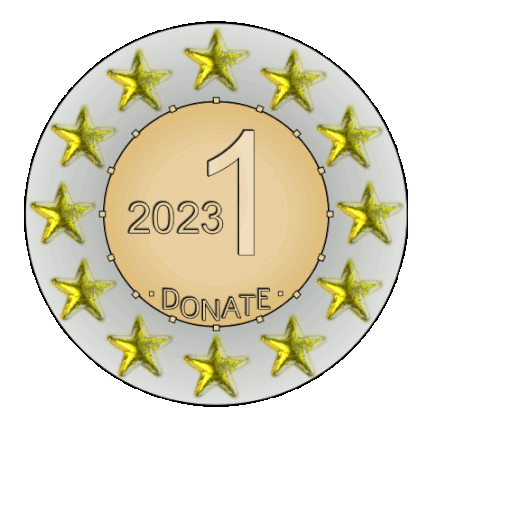

Welcome to
G-Donation.
Investing made non-profit. Maximize your donations to charitable organizations through a donor-advised fund, curated for you.
A simple, tax-efficient method to donate
It’s a charitable investment account. A donor-advised fund allows you to grow your donations until you’re ready to decide where your contributions should go, while receiving the same tax benefits as donating directly. To ensure socially responsible charitable giving and sustainable investing, our clients’ charitable plans remain at the forefront of Dono’s investment approach.
More on our strategy

Our Strategy
The fund’s investment philosophy is a two-pronged approach: we use sophisticated fundamentals systematically applied through state-of-the-art machine learning algorithms.

Process
g-Dono’s foundation is a continuous progression of design, refine, test, and repeat. By continuously generating, analyzing, and evaluating new opportunities, our trading and research team systematically integrate new models inspired by economic hypotheses into our investment strategies.
Analysis
Analyzing historical and current data through quantitative modeling and predictive analytics, we are able to profoundly understand the underlying patterns within a market, and improve the overall accuracy of our vision.
Implementation
We’re meticulous in every aspect of our investment approach. Implementing a broad range of investment strategies allows us deploy our capital with one eye on generating real alpha, and the other on effectively managing risk.
Synergy
We believe teamwork is essential for effective risk management. Our small team enables us to seamlessly integrate all components of our investment approach. By working together in managing risk, we have established a dynamic that ensures portfolios are manageable through sudden and severely adverse stress events.
Performance
G-Donation seeks to generate alpha by investing in commodities, currencies, and securities in global markets by combining rigorous fundamental research with mathematical and statistical models to identify and execute on investment opportunities.
| G-Donation | S&P 500 | |
|---|---|---|
| Sharpe Ratio | 2.08 | 0.41 |
| Beta | 3.12 | 1.00 |
| Alpha | 10.64% | 0.00% |
| 2020 YTD | 14.73% | -3.92% |
| 2019 | 42.81% | 11.83% |
| All-Time return | 63.85% | -3.92% |
| Annualized Rate of Return | 50.87% | 6.13% |
All performance results are net of fees and include dividends and other adjustments. 2020 YTD results are from 1/1/20 through 7/4/20. 2019 results are from Dono’s launch date of 4/20/19 through 12/31/19. All-Time Return is from Dono’s launch date of 4/20/19 through 7/4/20.
Who we are
We are a small group of individuals with a wide range of personal interests, backgrounds, and skillsets who are looking to push themselves and support our clients in their charitable giving in a sustainable and effective fashion. Our expertise spans macro views, monetary policy, and the intersection of big data and machine learning.